<meta charset="utf-8">
<meta name="viewport" content="width=device-width, initial-scale=1">
<title>{{title}}</title>
<link rel="preconnect" href="https://fonts.googleapis.com">
<link rel="stylesheet" href="https://fonts.googleapis.com/css2?family=Lato:wght@400;700;900&family=IBM+Plex+Mono:wght@400;500&display=swap">
<link rel="stylesheet" href="reference/bastow-page.css">
<!-- tabs -->
<header class="hero">
  <p class="eyebrow">{{platform}} · {{year}} · {{publisher}}</p>
  <h1>{{title}}</h1>
  <p class="sub">Twenty-seven places, drawn one routine each. Most are joined by a compass letter, and twenty-eight moves are special cases written one by one.</p>
</header>
<main class="wrap">
<section id="places">
  <h2 class="t">Every place</h2>
  <p>Each place has a number from 1 to 27, a picture routine, a name, and a list of up to three exits. Objects start in fixed places. The pictures below are the game’s own screens from the emulator. The exits are the ones the game lists with <code>g</code>; the <a href="#joins">special moves</a> add more, and moves made with a word such as <code>go trapdoor</code> are listed there too.</p>
  <div class="plate"><div style="overflow-x:auto">
  <table class="t">
    <tr><th class="n">#</th><th>Picture</th><th>Place</th><th>Exits listed</th><th>Objects at the start</th></tr>
    <tr id="place-1"><td class="n">1</td><td>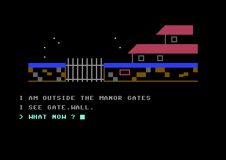</td><td><b>I am outside the manor gates</b><br>Picture routine at line 2000 (<code>$5185</code>).</td><td>s</td><td>gate, wall</td></tr>
<tr id="place-2"><td class="n">2</td><td>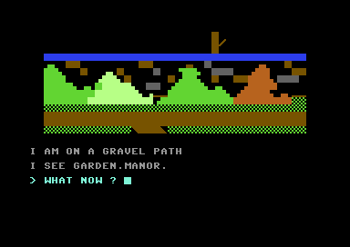</td><td><b>I am on a gravel path</b><br>Picture routine at line 2400 (<code>$5B1B</code>).</td><td>w, s, e</td><td>garden, manor</td></tr>
<tr id="place-3"><td class="n">3</td><td>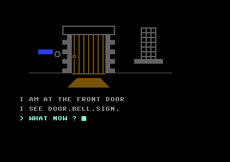</td><td><b>I am at the front door</b><br>Picture routine at line 2200 (<code>$56F1</code>).</td><td>w, e</td><td>door, bell, sign</td></tr>
<tr id="place-4"><td class="n">4</td><td>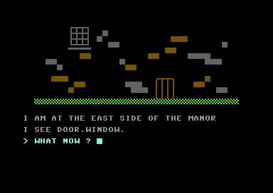</td><td><b>I am at the east side of the manor</b><br>Picture routine at line 2300 (<code>$5924</code>).</td><td>w</td><td>door, window</td></tr>
<tr id="place-5"><td class="n">5</td><td>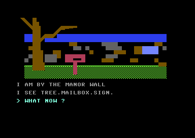</td><td><b>I am by the manor wall</b><br>Picture routine at line 2100 (<code>$5495</code>).</td><td>n</td><td>tree, mailbox, sign</td></tr>
<tr id="place-6"><td class="n">6</td><td>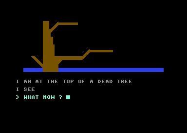</td><td><b>I am at the top of a dead tree</b><br>Picture routine at line 2600 (<code>$5FB2</code>).</td><td>none</td><td>nothing</td></tr>
<tr id="place-7"><td class="n">7</td><td>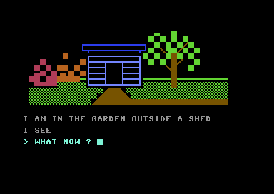</td><td><b>I am in the garden outside a shed</b><br>Picture routine at line 2500 (<code>$5D70</code>).</td><td>n, s</td><td>nothing</td></tr>
<tr id="place-8"><td class="n">8</td><td>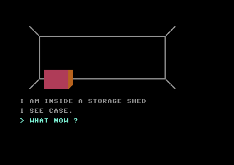</td><td><b>I am inside a storage shed</b><br>Picture routine at line 2700 (<code>$60E9</code>).</td><td>n</td><td>case</td></tr>
<tr id="place-9"><td class="n">9</td><td>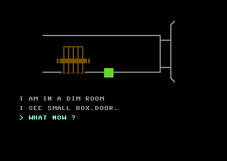</td><td><b>I am in a dim room</b> <span class="note">Dark: the torch must be lit.</span><br>Picture routine at line 2800 (<code>$62D7</code>).</td><td>w, s</td><td>small box, door</td></tr>
<tr id="place-10"><td class="n">10</td><td>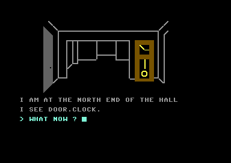</td><td><b>I am at the north end of the hall</b><br>Picture routine at line 2900 (<code>$6512</code>).</td><td>n, s</td><td>door, clock</td></tr>
<tr id="place-11"><td class="n">11</td><td>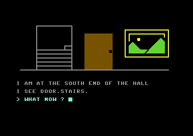</td><td><b>I am at the south end of the hall</b><br>Picture routine at line 3000 (<code>$6759</code>).</td><td>n, s</td><td>door, stairs</td></tr>
<tr id="place-12"><td class="n">12</td><td>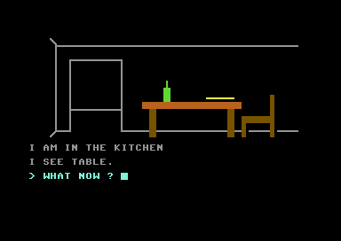</td><td><b>I am in the kitchen</b><br>Picture routine at line 3100 (<code>$6A32</code>).</td><td>n, w, s</td><td>table</td></tr>
<tr id="place-13"><td class="n">13</td><td>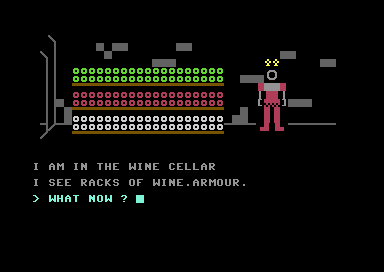</td><td><b>I am in the wine cellar</b><br>Picture routine at line 3200 (<code>$6C17</code>).</td><td>n</td><td>racks of wine, armour</td></tr>
<tr id="place-14"><td class="n">14</td><td>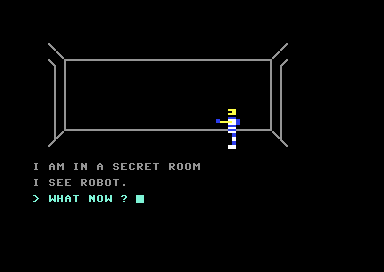</td><td><b>I am in a secret room</b><br>Picture routine at line 3300 (<code>$6E5A</code>).</td><td>w, e</td><td>robot</td></tr>
<tr id="place-15"><td class="n">15</td><td>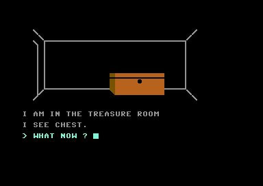</td><td><b>I am in the treasure room</b><br>Picture routine at line 3400 (<code>$6F38</code>).</td><td>w</td><td>chest</td></tr>
<tr id="place-16"><td class="n">16</td><td>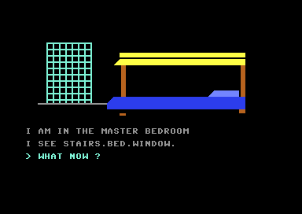</td><td><b>I am in the master bedroom</b><br>Picture routine at line 3500 (<code>$7051</code>).</td><td>s</td><td>stairs, bed, window</td></tr>
<tr id="place-17"><td class="n">17</td><td>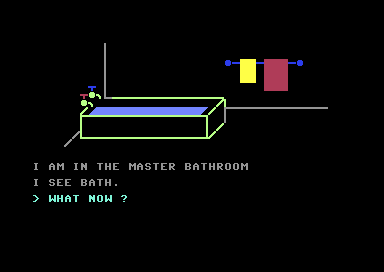</td><td><b>I am in the master bathroom</b><br>Picture routine at line 3600 (<code>$71DB</code>).</td><td>n</td><td>bath</td></tr>
<tr id="place-18"><td class="n">18</td><td>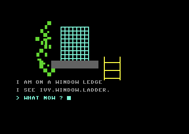</td><td><b>I am on a window ledge</b><br>Picture routine at line 3700 (<code>$734D</code>).</td><td>none</td><td>ivy, window</td></tr>
<tr id="place-19"><td class="n">19</td><td>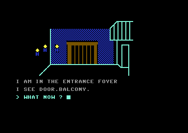</td><td><b>I am in the entrance foyer</b><br>Picture routine at line 3800 (<code>$7510</code>).</td><td>s, e</td><td>door, balcony</td></tr>
<tr id="place-20"><td class="n">20</td><td>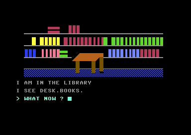</td><td><b>I am in the library</b><br>Picture routine at line 4450 (<code>$8063</code>).</td><td>w</td><td>desk, books</td></tr>
<tr id="place-21"><td class="n">21</td><td>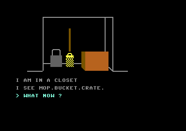</td><td><b>I am in a closet</b><br>Picture routine at line 4100 (<code>$76F0</code>).</td><td>e</td><td>mop, bucket, crate</td></tr>
<tr id="place-22"><td class="n">22</td><td>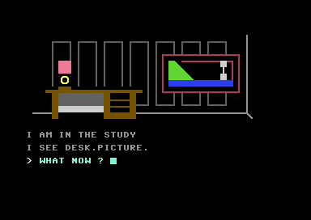</td><td><b>I am in the study</b><br>Picture routine at line 4200 (<code>$7952</code>).</td><td>e</td><td>desk, picture</td></tr>
<tr id="place-23"><td class="n">23</td><td>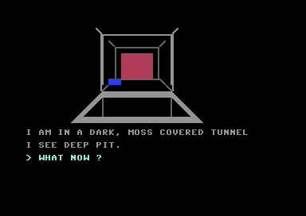</td><td><b>I am in a dark, moss covered tunnel</b> <span class="note">Dark: the torch must be lit.</span><br>Picture routine at line 4250 (<code>$7BE4</code>).</td><td>n, s</td><td>deep pit</td></tr>
<tr id="place-24"><td class="n">24</td><td>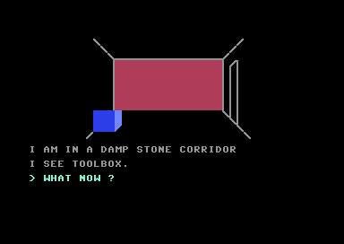</td><td><b>I am in a damp stone corridor</b> <span class="note">Dark: the torch must be lit.</span><br>Picture routine at line 4300 (<code>$7DE3</code>).</td><td>n, w, s</td><td>toolbox</td></tr>
<tr id="place-25"><td class="n">25</td><td>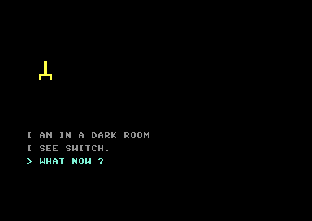</td><td><b>I am in a dark room</b><br>Picture routine at line 4350 (<code>$7F00</code>).</td><td>e</td><td>switch</td></tr>
<tr id="place-26"><td class="n">26</td><td>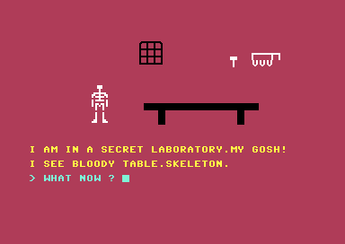</td><td><b>I am in a secret laboratory.my gosh!</b><br>Picture routine at line 4400 (<code>$7F5B</code>).</td><td>n, e</td><td>bloody table, skeleton</td></tr>
<tr id="place-27"><td class="n">27</td><td>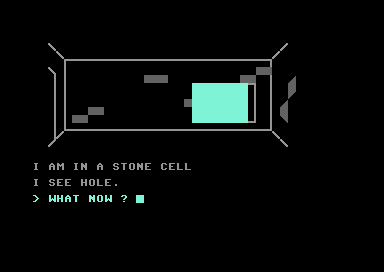</td><td><b>I am in a stone cell</b> <span class="note">Dark: the torch must be lit.</span><br>Picture routine at line 4500 (<code>$8274</code>).</td><td>w</td><td>nothing</td></tr>
  </table></div>
  <p class="cap">Place 25 is the dark room: its picture is the single switch on a black screen. The pictures are screenshots of the game running in the VICE emulator.</p></div>
</section>

<section id="joins">
  <h2 class="t">How the places join</h2>
  <p>A listed compass move goes to the next place number down (<code>n</code>, <code>w</code>) or up (<code>s</code>, <code>e</code>). Before that rule is tried, lines 320 to 353 check for a special move that takes the same letter in the same place, and these join places that are not neighbours by number:</p>
  <ul>
    <li>north of the north hall (10) to the entrance foyer (19), and south of the foyer back;</li>
    <li>the study (22) east to the south hall (11);</li>
    <li>the kitchen (12) west to the closet (21), and the closet east back;</li>
    <li>the dim room (9) south to the tunnel (23), west to the storage shed (8);</li>
    <li>the tunnel (23) south to the corridor (24) and back, but only once the branch lies across the pit; before that the game says <i>i can’t do that…yet</i>;</li>
    <li>the corridor (24) west to the dark room (25) and south to the laboratory (26);</li>
    <li>the laboratory (26) east to the cell (27) and north back to the corridor;</li>
    <li>the secret room (14) east to the treasure room (15) and west to the cell (27);</li>
    <li>the gravel path (2) south to the garden (7), and the gates (1) south to the manor wall (5);</li>
    <li>the garden (7) south to the shed (8).</li>
  </ul>
  <p>Moves that use a word are lines 370 to 391: <code>go gate</code> (1 to 2), <code>go trapdoor</code> (8 to 9), <code>go stairs</code> (11 to 16 and back), <code>go window</code> (16 to 18 and back, once the window is open), <code>go door</code> (11 to 22 with the study door open, and 9 to 10 with the beam gone), <code>go tree</code> (5 to 6 and back) and <code>go hole</code> (27 to 14). Two more set the place directly: the balcony’s fall into the library, and the way out of the cell, both described on the <a href="gameplay.html#safe">Gameplay page</a>.</p>
  <p>The library (20) is reached from the balcony scene (line 1736) and lists one exit, west, to the foyer. The foyer lists an east exit that is not a walk but that same scene.</p>
</section>
</main>
<footer style="margin:16px 0 0;padding:22px var(--gx) 0;border-top:1px solid #e0ded8;font-family:'IBM Plex Mono',ui-monospace,Menlo,monospace;font-size:12px;color:#80838a"><a href="https://github.com/gamesexplained/gamesexplained" style="color:#1f5fa8;text-decoration:none">GitHub</a> · <a href="https://discord.gg/3V9GWyRDWV" style="color:#1f5fa8;text-decoration:none">Discord</a><br>© Games Explained contributors. Write-ups, facts and symbol maps are available under <a href="https://creativecommons.org/licenses/by-sa/4.0/" style="color:#1f5fa8;text-decoration:none">CC BY-SA 4.0</a>; code under <a href="https://opensource.org/licenses/MIT" style="color:#1f5fa8;text-decoration:none">MIT</a></footer>
